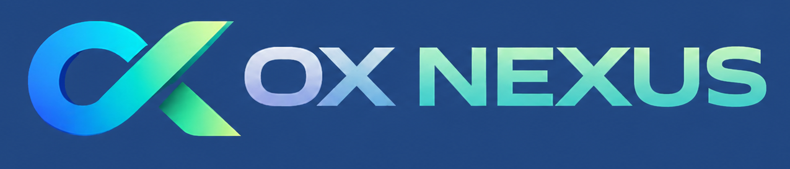

Tempo perdido
Horas gastas em conferências repetitivas.

Do caos financeiro à clareza operacional.
A OxNexus ajuda empresas a validarem se aquilo que foi vendido, cobrado, pago e recebido realmente está correto.
Dor real da operação
No dia a dia, as informações financeiras ficam espalhadas entre banco, ERP, operadora, boleto, NFC-e, e-commerce e planilhas. Quando algo não bate, alguém precisa parar tudo para conferir manualmente.
Horas gastas em conferências repetitivas.
O time volta aos mesmos arquivos para explicar diferenças.
Cobranças pequenas que somam impacto relevante no mês.
Pagamentos que precisam de revisão antes de virarem prejuízo.
Relatórios existem, mas a decisão ainda fica insegura.
O ponto cego
As empresas já possuem dados. O desafio é que esses dados chegam de várias fontes, em formatos diferentes e, muitas vezes, com divergências.
Solução
A OxNexus recebe informações financeiras, organiza os dados e cruza vendas, pagamentos, boletos, taxas, NFC-e, e-commerce, bancos e operadoras em um único fluxo inteligente.
Arquivos e fontes financeiras entram em um fluxo único.
Dados dispersos ganham padrão e contexto.
Vendido, cobrado, pago e recebido são comparados.
Diferenças aparecem com valor, origem e prioridade.
Boletos e registros suspeitos recebem classificação clara.
O financeiro enxerga o que está certo e o que precisa agir.
Módulos
Compare vendas registradas com pagamentos recebidos.
Valide valores previstos e valores efetivamente pagos.
Identifique cobranças diferentes das taxas contratadas.
Detecte divergências, boletos suspeitos e possíveis fraudes.
Cruze documentos fiscais com vendas registradas.
Valide pedidos, gateways, cancelamentos, reembolsos e chargebacks.
Conecte recebimentos, contas e extratos em uma visão consistente.
Veja bandeiras, taxas, liquidações e divergências em detalhe.
Antifraude
Na primeira versão, a OxNexus identifica boletos suspeitos por regras simples. No futuro, a validação poderá ocorrer por APIs e integrações com bancos, ERPs e sistemas autorizados pelo cliente.
IA contextual
Se o cliente estiver na tela de boletos, a IA responde sobre boletos. Se estiver na tela de taxas, responde sobre taxas. Se estiver na conciliação, explica a divergência encontrada.
Para quem é
Planos
Implantação: R$ 3.500
Ideal para empresas em fase inicial de organização financeira.Implantação: R$ 3.500
Ideal para maior volume de vendas, boletos e conciliações.Implantação: R$ 4.200
Ideal para redes, franquias e empresas com múltiplos CNPJs.Implantação sob consulta
Ideal para contabilidades, BPOs financeiros e grandes operações.Prova de valor
Com o serviço opcional de analista financeiro parceiro, a empresa pode medir quanto tempo gasta hoje com conciliação manual e, após 3 meses de uso, visualizar horas economizadas, retrabalho reduzido e divergências identificadas.
A OxNexus transforma dados financeiros dispersos em clareza para decisão.